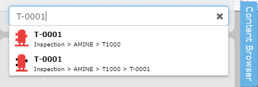
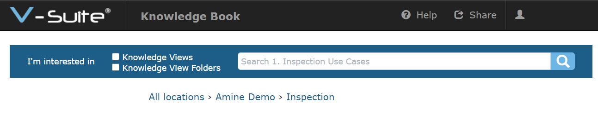

Knowledge BookURL クエリ文字列
ユーザーは、アプリケーションヘッダーの共有アイコンを使用してナレッジビューまたはフォルダーを共有できます。ユーザーは、ナレッジ ビューを開いてアセットコンテキスト メニューナレッジビューそのナレッジビュービュー内の特定のアセットにズームするようにKnowledge Bookアプリケーションに指示する受信 URL を生成することもできます。 リンクのコピーコマンド。これらのアプリケーション コマンドは、内部 ID に基づいて受信 URL を生成します。アプリケーションが生成した受信 URL は次のようになります。
https://vsuite.mycompany.com/KnowledgeBook/rc/nav/122ace4d-31c0-e811-8166-0299893c3555
ただし、外部 Web サイトまたはアプリケーションが名前に基づいてユーザーをV-Suiteナレッジビューまたはフォルダに誘導できるようにするには、クエリ文字列を含む URL を提供します。
URL クエリ文字列
Knowledge Bookアプリケーションは、ナレッジビューフォルダー、ナレッジビュー、またはスクラッチ パッド ページを開くためのクエリ文字列をサポートしています。次のクエリ文字列がサポートされています。
| アクションでは大文字と小文字が区別されます。 「openkv」または「zoom」を指定すると機能しますが、「OpenKV」または「Zoom」を指定するとエラーになります。 |

アクション | 説明 | 価値 |
?openfolder | フォルダーのエンコードされた場所。フォルダー名およびビュー名の一般的な文字との競合を回避するには、フォルダー区切り文字を次のエスケープ シーケンスで示す必要があります: _._ | |
?openkv | ビューアでナレッジビューを開きます。 | ナレッジビューのエンコードされた場所と名前 |
&spp | スクラッチ パッドページ エディタでスクラッチ パッド ページを開きます。 ?openkvアクションと組み合わせて使用する必要があります。 | スクラッチパッドページのエンコードされた名前。 |
&zoom | ビューア内のアセットをズームして選択 (ハイライト) します。 ?openkvアクションと組み合わせて使用する必要があります。 | アセットのエンコードされた名前。 |
&type | Type は、 &zoomアクションに使用されるオプションの補足パラメータです。これは、開いたナレッジビュー内に特定の名前を持つ複数のアセットが存在する場合に、アセットを一意に識別するのに役立ちます。 | アセットのエンコードされたタイプ。 |
&pickcolor | Pickcolor は、 &zoomアクションに使用されるオプションの補足パラメータです。ビューアでアセットをズームするときに、代替アセットのハイライト色を指定するために使用されます。 | ハイライト色の 16 進コード (最初のハッシュタグ「#」文字は除く)。たとえば、&pickcolor の値「8B0000」を指定すると、ハイライト色として濃い赤を使用することになります。 |
&viewer | 表示されるナレッジビューアプリケーションのレイアウトを制御します。 このアクションは、HTML IFrame 内でビューアをレンダリングするときに、ナレッジビューアプリケーションに表示される UI を制限する場合にのみ役立ちます。 このアクションは、アプリケーション インテグレーターのみが使用することを目的としています。 ?openkvアクションと組み合わせて使用する必要があります。 | =fullに設定すると、すべてのコントロールと機能が含まれた標準のナレッジビューレイアウトが開きます。これは、ビューアのアクションが省略された場合のデフォルトのオプションです。 =basicに設定すると、 UI と機能が IFrame 内に埋め込まれたときに表示されるのに適したもののみに制限されます。制限には次のようなものがあります。
最小限の (ナビゲーションのみ) 機能でビューアを開くには、 =navonlyに設定します。 |
&xray | ビューアの X 線モードをオンにします。 ?openkvアクションと組み合わせて使用する必要があります。 |
|
フォルダー名、ビュー名、およびアセット名には URI 予約文字または Unicode 文字を含めることはできず、(RFC 3986 に従って) エンコードする必要があります。たとえば、名前内のスペースは「%20」としてエンコードする必要があります。
 |
フォルダーを開く例:
 |
ホスト「 vsuite.mycompany.com 」で、フォルダーの場所「 Amine Demo > Inspection 」を開きます。
URL: https://vsuite.mycompany.com/KnowledgeBook/rc/?openfolder=Amine%20Demo_._Inspection |
ナレッジビューを開く例:
ホスト「 vsuite.mycompany.com 」で、フォルダーの場所「 Amine Demo > Inspection 」のナレッジビュー「 Inspection Due Status 」を開きます。
URL: https://vsuite.mycompany.com/KnowledgeBook/rc/?openkv=Amine%20Demo_._Inspection_._Inspection%20Due%20Status |
スクラッチパッドページを開く例:
ホスト「 vsuite.mycompany.com」で、フォルダーの場所「 Amine Demo > Inspection 」にあるナレッジビュー「 Inspection Due Status 」のスクラッチパッドページ「 FIELD Notes 」を開きます。
URL: https://vsuite.mycompany.com/KnowledgeBook/rc/?openkv=Amine%20Demo_._Inspection_._Inspection%20Due%20Status&spp=FIELD%20NOTES |
アセットにズームする例:
ホスト「 vsuite.mycompany.com 」で、フォルダーの場所「 Amine Demo > Inspection 」のナレッジビュー「 Inspection Due Status 」で「 TK-0001 」という名前のアセットにズームします。
URL: https://vsuite.mycompany.com/KnowledgeBook/rc/?openkv=Amine%20Demo_._Inspection_._Inspection%20Due%20Status&zoom=TK-0001 |
アセットとタイプにズームする例:
ホスト「 vsuite.mycompany.com 」で、フォルダの場所「 Amine Demo > Inspection 」のナレッジビュー「 Inspection Due Status 」で「 T-0001 」という名前のアセットにズームします。 「 T-0001 」という名前のアセットが 2 つあり、1 つは機器 、もう 1 つは機器アセンブリ であるため、オプションの 'Type' パラメーターを使用して、 機器にズームする対象であることをさらに識別します。
URL: https://vsuite.mycompany.com/KnowledgeBook/rc/?openkv=Amine%20Demo_._Inspection_._Inspection%20Due%20Status&zoom=T-0001&type=機器 |
Pickcolor および XRay モードでアセットにズームする 例:
ホスト「 vsuite.mycompany.com 」で、フォルダーの場所「 Amine Demo > Inspection 」のナレッジビュー「 Inspection Due Status 」で「 TK-0001 」という名前のアセットにズームします。アセットはカスタム色 (濃い赤) を使用して強調表示されます。他のすべてのアセットは、 X 線画像に似た灰色の透明な外観を使用して表示されます。
URL: https://vsuite.mycompany.com/KnowledgeBook/rc/?openkv=Amine%20Demo_._Inspection_._Inspection%20Due%20Status&zoom=TK-0001&pickcolor=8B0000&xray=on |
基本ビューアでナレッジビューを開く例:
ホスト「 vsuite.mycompany.com 」で、限定されたナレッジビューレイアウトを使用して、フォルダーの場所「 Amine Demo > Inspection 」にあるナレッジビュー「 Inspection Due Status 」を開きます。
URL: https://vsuite.mycompany.com/KnowledgeBook/rc/?openkv=Amine%20Demo_._Inspection_._Inspection%20Due%20Status&viewer=basic |
最小限の (ナビゲーションのみ) ビューアでナレッジビューを開く例:
ホスト「 vsuite.mycompany.com 」で、最小限のナレッジビューレイアウトを使用して、フォルダーの場所「 Amine Demo > Inspection 」にあるナレッジビュー「 Inspection Due Status 」を開きます。
URL: https://vsuite.mycompany.com/KnowledgeBook/rc/?openkv=Amine%20Demo_._Inspection_._Inspection%20Due%20Status&viewer=navonly |